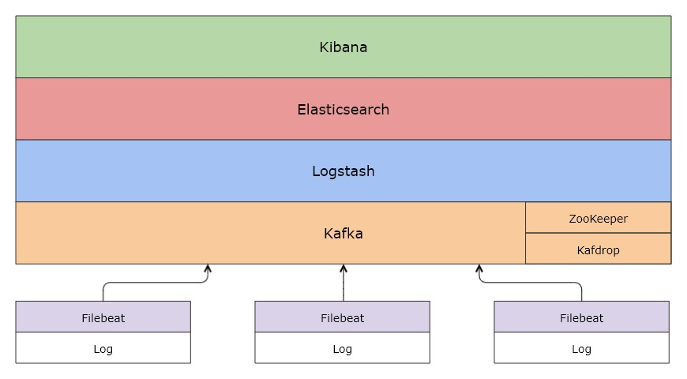
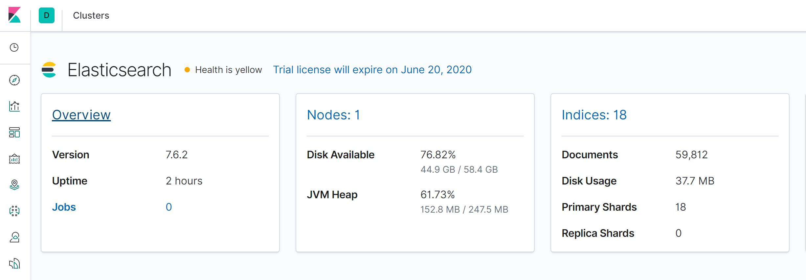
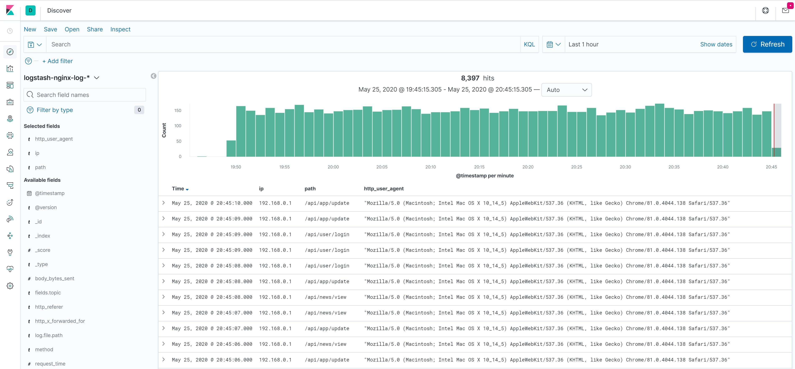
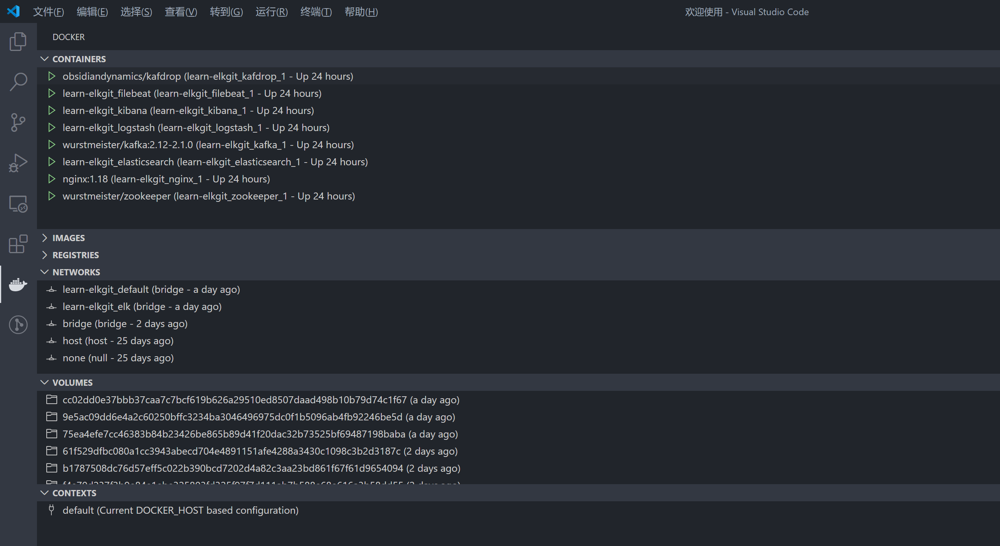
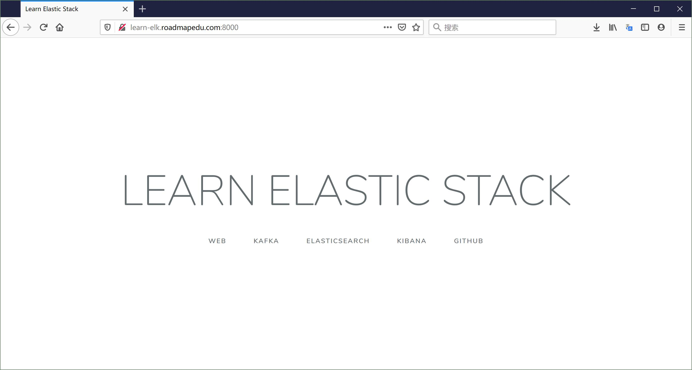

前言
大数据时代，业务无时不刻在产生大量数据。如何挖掘这些数据的价值，已经成为每个公司的必修课。
工欲善其事，必先利其器，一款方便高效的工具，可以辅助我们实时洞察源源不断产生的数据，发现其中的价值。
ELK Stack 正是在这样一款工具。
准确来说 ELK Stack 是一组工具集合，可以完成数据采集、清洗过滤、运输存储、索引查询、交互式探索、可视化报表等一系列工作。
本小册全面介绍 ELK Stack 包含的各个组件及其使用方法，让零基础的读者也能轻松搭建整个套件，并运用到实际的生产环境中。
在示例中，我们将打造一个大规模日志实时分析系统，实现每天数十亿条日志或者 PB 级数据的分析处理。
事不宜迟，马上开始！
什么是 ELK Stack

ELK 是 3 款开源软件 Elasticsearch / Logstash / Kibana 的简称，基于这 3 款软件及其相关组件组成的数据处理系统称之为 ELK Stack。
从上面的架构图可以清晰地看到各个组件以栈[Stack]的形式构成整个系统。
由于系统涉及的组件越来越多，比如 Filebeat、Metricbeat、Kafka、Zookeeper 等，而不仅仅是 ELK，所以 ELK Stack 也逐渐被称为 Elastic Stack。
下面，简单介绍 Elastic Stack 涉及的各个组件：
Elasticsearch
Elasticsearch 是一个搜索和分析引擎，主要负责将日志索引并存储起来，方便业务方检索查询

Logstash
Logstash 是服务器端数据处理管道，能够同时从多个来源采集数据，转换数据，然后将数据发送到诸如 Elasticsearch 等“存储库”中

Kibana
Kibana 则可以让用户在 Elasticsearch 中使用图形和图表对数据进行可视化

Kafka
在生产环境中，为了提升系统的稳定性和可扩展性，会增加一层消息队列中间件，用来「削峰填谷」，从容应对各类突发流量，保障后端日志索引服务的平稳性。
Kafka 正是这样一款分布式消息队列服务中间件。

Filebeat
Filebeat 是轻量型日志采集器，用于转发和汇总日志与文件，让简单的事情不再繁杂。

小结
基于 Elastic Stack 可以轻松打造大规模日志实时分析处理系统。
所谓「大规模」，指的是 Elastic Stack 支持每天收集、处理、索引数十甚至上百亿规模的各类日志，这主要得益于 Filebeat、Kafka、Logstash、Elasticsearch 都支持分布式部署，可以无限水平扩展。
各类文本形式的日志都在处理范围，本小册以最常见的 Nginx 访问日志为例，演示如何搭建大规模日志实时分析处理系统。对访问日志的实时分析，可以帮助我们随时掌握业务的运行状况、统计 PV/UV、发现异常流量、分析用户行为、查看热门站内搜索关键词等。
演示环境安装与配置
本地开发环境
为了深入理解各个组件的使用，建议读者在本地搭建一个开发环境。
为了解决系统环境和依赖的问题，本小册使用 Docker 容器运行各个组件，并使用 Docker Compose 进行服务编排，实现可「一键启动」的开发环境。
Docker 下载与安装
Docker 是一种容器化技术，可以将软件及其依赖的运行环境打包进一个容器中，和虚拟机不同的是，Docker 容器非常轻量，可以实现秒级的启动或关闭。
-
Docker 支持 Linux / Windows / MacOS 平台。
-
在官网下载与安装 Docker https://docs.docker.com/get-docker/
-
系统配置要求：
- 4GB 以上内存
- 2 核以上 CPU
Docker Desktop for Windows/Mac
为了支持 Windows 和 Mac 操作系统，Docker 开发了 Docker Desktop for Windows/Mac
以下是 Docker Desktop 运行起来的界面：

可以通过设置页面，配置足够的计算资源：

Docker for Linux
由于 Docker 源于 Linux 虚拟化技术，所以对 Linux 操作系统支持的很好。
安装参见 https://docs.docker.com/engine/install/
启动 Docker
Docker Desktop for Windows/Mac 安装完成后，直接双击图标就可以启动：

Docker for Linux 安装完成后，需要先启动 Docker 服务：
service docker start
启动成功后，可以在命令行查看 Docker 相关信息：
# docker version
Client: Docker Engine - Community
Version: 19.03.7
API version: 1.40
Go version: go1.12.17
Git commit: 7141c199a2
Built: Wed Mar 4 01:24:10 2020
OS/Arch: linux/amd64
Experimental: false
Server: Docker Engine - Community
Engine:
Version: 19.03.7
API version: 1.40 (minimum version 1.12)
Go version: go1.12.17
Git commit: 7141c199a2
Built: Wed Mar 4 01:22:45 2020
OS/Arch: linux/amd64
Experimental: false
containerd:
Version: 1.2.13
GitCommit: 7ad184331fa3e55e52b890ea95e65ba581ae3429
runc:
Version: 1.0.0-rc10
GitCommit: dc9208a3303feef5b3839f4323d9beb36df0a9dd
docker-init:
Version: 0.18.0
如果没有启动成功，则会报错：
# docker ps
Cannot connect to the Docker daemon at unix:///var/run/docker.sock. Is the docker daemon running?
Docker Compose
有了 Docker 后我们可以轻松运行各种软件，但是对于一个大型系统，涉及很多服务，以及服务之间的依赖关系。
如果手动处理各个服务、网络配置等计算资源，效率低下且容易出错。
这个时候可以使用 Docker Compose 编排这些服务，实现大型系统的「一键启动」

Docker 配置
本小册演示环境的所有配置都已经开源并托管在 Github ，下载地址：
系统配置目录结构如下所示：
.
├── docker-compose.yml
├── elasticsearch
│ ├── config
│ │ └── elasticsearch.yml
│ └── Dockerfile
├── .env
├── filebeat
│ ├── Dockerfile
│ └── filebeat.yml
├── kibana
│ ├── config
│ │ └── kibana.yml
│ └── Dockerfile
├── logstash
│ ├── config
│ │ └── logstash.yml
│ ├── Dockerfile
│ └── pipeline
│ ├── logstash.conf
│ └── nginx.conf
└── nginx
├── html
│ └── index.html
└── nginx.conf
其中 .env 文件声明使用 7.6.2 版本的 Elastic Stack:
ELK_VERSION=7.6.2
如果你想测试其他版本的 Elastic Stack，只需修改ELK_VERSION参数即可。
一键启动
上述配置文件中，docker-compose.yml 声明了我们需要的服务以及如果构建这些服务。
Docker 安装并启动后，执行以下命令即可「一键启动」整个开发环境：
cd learn-elk.git/docker-compose/
docker-compose -f "docker-compose.yml" up -d --build
# 运行结果
Creating network "learn-elkgit_elk" with driver "bridge"
Creating network "learn-elkgit_default" with the default driver
Building elasticsearch
Step 1/2 : ARG ELK_VERSION
Step 2/2 : FROM docker.elastic.co/elasticsearch/elasticsearch:${ELK_VERSION}
---> f29a1ee41030
Successfully built f29a1ee41030
Successfully tagged learn-elkgit_elasticsearch:latest
Building logstash
Step 1/2 : ARG ELK_VERSION
Step 2/2 : FROM docker.elastic.co/logstash/logstash:${ELK_VERSION}
---> fa5b3b1e9757
Successfully built fa5b3b1e9757
Successfully tagged learn-elkgit_logstash:latest
Building kibana
Step 1/2 : ARG ELK_VERSION
Step 2/2 : FROM docker.elastic.co/kibana/kibana:${ELK_VERSION}
---> f70986bc5191
Successfully built f70986bc5191
Successfully tagged learn-elkgit_kibana:latest
Building filebeat
Step 1/2 : ARG ELK_VERSION
Step 2/2 : FROM docker.elastic.co/beats/filebeat:${ELK_VERSION}
---> 0272ee9a7757
Successfully built 0272ee9a7757
Successfully tagged learn-elkgit_filebeat:latest
Creating learn-elkgit_nginx_1 ... done
Creating learn-elkgit_zookeeper_1 ... done
Creating learn-elkgit_elasticsearch_1 ... done
Creating learn-elkgit_kafka_1 ... done
Creating learn-elkgit_kibana_1 ... done
Creating learn-elkgit_logstash_1 ... done
Creating learn-elkgit_filebeat_1 ... done
Creating learn-elkgit_kafdrop_1 ... done
Creating learn-elkgit_metricbeat_1 ... done
注意：首次启动的时候，需要下载镜像文件，可能需要数十分钟，请耐心等候一下
如果你使用 VSCode 编辑器 并且 安装了 Docker 插件，那么你可以看到运行中的容器状态：

小结
本小节介绍了在线演示环境使用、本地开发环境搭建，在这个过程中读者也对整个系统有了大概的认识。
接下来，我们深入每个模块，了解其配置和运行环境。
常见问题
- filebeat 启动报错：
Exiting: error loading config file:
config file ("filebeat.yml") can only be writable by the owner but the permissions are "-rw-rw-r--"
(to fix the permissions use: 'chmod go-w /usr/share/filebeat/filebeat.yml')
原因：如果在 Linux 系统下启动，需要保证 filebeat 配置文件的读写权限正确，否则 Filebaet 容器无法启动并报错
解决方法：修改 filebeat 配置文件权限 chmod 644 filebeat.yml
Nginx 访问日志
Nginx 服务配置
在 docker-compose.yaml 对于 Nginx 服务的配置中：
nginx:
image: nginx:1.18
ports:
- "8000:80"
volumes:
- "./nginx/nginx.conf:/etc/nginx/nginx.conf:ro"
- "./nginx/html:/usr/share/nginx/html:ro"
- type: volume
source: nginx-log
target: /var/log/nginx
- 使用 Nginx 1.18 版本的官方镜像，默认使用的镜像仓库地址为： https://hub.docker.com/_/nginx
- 将宿主机的 8000 端口映射到到 Nginx 容器内的 80 端口，这样就可以通过宿主机地址访问容器内服务
- 数据卷映射：
- 将宿主机目录下的配置文件 以及
html目录映射到容器内相应的目录，这样容器内应用就可以访问宿主机上的文件或目录 - 使用宿主机上名为
nginx-log的数据卷，并映射到容器内的/var/log/nginx目录，目的是让运行在同一宿主机上的容器之间共享目录 - Filebeat 容器也会用到
nginx-log数据卷，在这个目录收割 Nginx 访问日志
- 将宿主机目录下的配置文件 以及
Nginx 配置
对于 nginx/nginx.conf 配置：
user nginx;
worker_processes 1;
error_log /var/log/nginx/elk-error.log warn;
pid /var/run/nginx.pid;
events {
worker_connections 1024;
}
http {
include /etc/nginx/mime.types;
default_type application/octet-stream;
log_format main '$remote_addr - $remote_user [$time_local] "$request" '
'$status $body_bytes_sent $request_time "$http_referer" '
'"$http_user_agent" "$http_x_forwarded_for"';
access_log /var/log/nginx/elk-access.log main;
sendfile on;
gzip on;
server {
listen 80;
rewrite ^(.*)$ /index.html;
location / {
root /usr/share/nginx/html;
index index.html index.htm;
}
}
}
通过配置 Nginx 日志格式，可以将每个用户的访问信息记录到日志中，主要包括以下字段：
$remote_addr用户 ip 地址$remote_user用户标识$time_local服务器时间$requesthttp 请求头信息，包括 http method / uri / http 版本$status服务器响应状态码，例如 200/302/404/504$body_bytes_sent服务器响应内容大小(单位 bytes)$request_time请求处理时间$http_referer请求来源 referer$http_user_agent用户系统/浏览器等信息$http_x_forwarded_for网络代理 ip 列表(如果使用代理)
日志示例：
#tail -f /var/log/nginx/elk-access.log
192.168.0.1 - - [26/May/2020:12:31:31 +0000] "GET /api/news/view HTTP/1.0" 404 555 0.000 "-" "Mozilla/5.0 (Macintosh; Intel Mac OS X 10_14_5) AppleWebKit/537.36 (KHTML, like Gecko) Chrome/81.0.4044.138 Safari/537.36" "-"
192.168.0.1 - - [26/May/2020:12:31:32 +0000] "GET /api/app/update HTTP/1.0" 404 555 0.000 "-" "Mozilla/5.0 (Macintosh; Intel Mac OS X 10_14_5) AppleWebKit/537.36 (KHTML, like Gecko) Chrome/81.0.4044.138 Safari/537.36" "-"
192.168.0.1 - - [26/May/2020:12:31:32 +0000] "GET /api/user/login HTTP/1.0" 404 555 0.000 "-" "Mozilla/5.0 (Macintosh; Intel Mac OS X 10_14_5) AppleWebKit/537.36 (KHTML, like Gecko) Chrome/81.0.4044.138 Safari/537.36" "-"
这些日志将被 Filebeat 采集后投递到 Kafka 消息队列，再经过 Logstash 的格式化处理后，索引到 Elasticsearch 中，最后通过 Kibana 可视化查询。
运行效果

Filebeat 日志收割
Filebeat 服务配置
在 docker-compose.yaml 对于 Filebeat 服务的配置中：
filebeat:
build:
context: filebeat/
args:
ELK_VERSION: $ELK_VERSION
volumes:
- "./filebeat/filebeat.yml:/usr/share/filebeat/filebeat.yml:ro"
- type: volume
source: nginx-log
target: /var/log
depends_on:
- nginx
networks:
- elk
- 使用 filebeat/ 目录下的 Dockerfile 构建镜像
- 数据卷映射：
- 将宿主机目录下的配置文件映射到容器内
- 使用宿主机上名为 nginx-log 的数据卷，并映射到容器内的
/var/log目录，这和 Nginx 容器使用的是同一个目录
- Filebeat 服务依赖于 Nginx 服务，所以 Docker Compose 会先启动 Nginx ，然后再启动 Filebeat
- 使用名为 elk 的子网络，这样便可以访问同样使用这个子网络的其他容器
Filebeat 日志收割配置
对于 filebeat/filebeat.yml 配置：
filebeat.inputs:
- type: log
paths:
- /var/log/*access.log
encoding: utf-8
fields:
topic: nginx-log
scan_frequency: 1s
harvester_buffer_size: 16384
tail_files: false
close_eof: true
clean_removed: true
processors:
- drop_fields:
fields: ["ecs", "input", "host", "agent", "log.offset"]
ignore_missing: true
#------------------------------- Kafka output ---------------------------------
output.kafka:
enabled: true
hosts: ["kafka:9092"]
topic: elk-%{[fields.topic]}
worker: 2
keep_alive: 60
required_acks: 1
Filebeat 通过配置 input / processors / output 模块，实现日志收集、预处理、投递等工作
对于 input 模块：
type配置数据来源的类型，例如 文本日志 log 或者 控制台输出 stdoutpaths指定日志的路径，可以使用模糊匹配，例如/var/log/*access.logencoding日志的编码，例如 utf-8fields自定义添加的字段，例如 增加一个主题字段topic: nginx-logscan_frequency: 1s扫描日志文件的间隔harvester_buffer_size: 16384日志收割缓存大小tail_files: false启动 filebeat 后，是否从目标日志文件的结尾开始收集close_eof: true采集日志到文件结尾的时候，是否关闭采集进程clean_removed: true采集目标日志文件被移除后，是否从 filebeat registry 清楚
更全面的配置信息，请参考：
对于 processors 模块：
drop_fields可以舍弃部分多余字段
对于 output 模块：
output.kafka将收集的日志投递到 Kafka 消息队列hosts: ["kafka:9092"]指定 Kafka 服务的地址topic: elk-%{[fields.topic]}指定投递到 Kafka 消息队列的频道keep_alive: 60Filebeat 和 Kafka 之间保持连接的时间required_acks: 1日志消息投递后，是否需要等待 Kafka 的确认反馈
更全面的配置信息，请参考：
小结
Filebeat 启动后，开始监听目标文件，当发现新日志后就收集转发出去。
Kafka 消息队列
Kafka 服务配置
在 docker-compose.yaml 对于 Kafka 服务的配置中：
zookeeper:
image: wurstmeister/zookeeper
ports:
- "2181:2181"
networks:
- elk
kafka:
image: wurstmeister/kafka:2.12-2.1.0
ports:
- "9092:9092"
environment:
KAFKA_ADVERTISED_HOST_NAME: $HOST_IP
KAFKA_ZOOKEEPER_CONNECT: zookeeper:2181
KAFKA_HEAP_OPTS: "-Xmx512M -Xms512M"
volumes:
- /var/run/docker.sock:/var/run/docker.sock
depends_on:
- zookeeper
networks:
- elk
kafdrop:
image: obsidiandynamics/kafdrop
ports:
- "9000:9000"
environment:
KAFKA_BROKERCONNECT: kafka:9092
JVM_OPTS: "-Xms32M -Xmx64M"
SERVER_SERVLET_CONTEXTPATH: "/"
depends_on:
- kafka
networks:
- elk
- Kafka 依赖 zookeeper 提供分布式状态存储服务
- 注意选择 Kafka 的版本和 ELK 兼容，这里选的是
wurstmeister/kafka:2.12-2.1.0 - 使用名为 elk 的子网络，这样便可以访问同样使用这个子网络的其他容器
- 使用 Kafka 可视化管理工具 Kafdrop 可以查看 Kafka 当前运行状态
Kafdrop 可视化管理后台
Kafdrop 是一款 Kafka web ui 软件，支持丰富的管理功能，包括：
- 查看 Kafka 节点
- 查看/创建 Topics
- 浏览消息
- 查看 consumer groups
- ...
小结
Kafka 作为消息队列服务，具有高吞吐、低延迟、高并发、高可用等优点，应用到 Elastic Stack 中可以显著提升整个系统的稳定性。
成百上千的 Filebeat 实例可以即时地将大量日志转发到 Kafka，再由 Logstash 按照阈值能力慢慢处理，达到「削峰填谷」的效果。
Logstash 处理日志
Logstash 服务配置
在 docker-compose.yaml 对于 Logstash 服务的配置中：
logstash:
build:
context: logstash/
args:
ELK_VERSION: $ELK_VERSION
volumes:
- type: bind
source: ./logstash/config/logstash.yml
target: /usr/share/logstash/config/logstash.yml
read_only: true
- type: bind
source: ./logstash/pipeline
target: /usr/share/logstash/pipeline
read_only: true
ports:
- "9600:9600"
environment:
LS_JAVA_OPTS: "-Xmx256m -Xms256m"
networks:
- elk
depends_on:
- elasticsearch
- 使用 logstash/ 目录下的 Dockerfile 构建镜像
- 数据卷映射：
- 将宿主机目录下的配置文件映射到容器内
- 使用名为 elk 的子网络，这样便可以访问同样使用这个子网络的其他容器
Logstash Pipeline 配置
在 logstash/pipeline/nginx.conf 配置：
### INPUTS
input {
kafka {
codec => "json"
topics_pattern => "elk-nginx-log"
bootstrap_servers => "kafka:9092"
auto_offset_reset => "latest"
group_id => "nginx-log"
}
}
### FILTERS
filter {
grok {
#获取 Nginx 日志字段
match => {
"message" => [
#Nginx access log 格式
# 172.19.0.1 - - [21/May/2020:09:34:14 +0000] "GET /index.html?f=hello HTTP/1.1" 200 5 0.000 "-" "Mozilla/5.0 (Windows NT 10.0; Win64; x64) AppleWebKit/537.36 (KHTML, like Gecko) Chrome/81.0.4044.92 Safari/537.36" "-"
'%{IPV4:ip} - - \[%{HTTPDATE:[@metadata][timestamp]}\] "%{WORD:method} %{URIPATH:path}(?:%{GREEDYDATA:query}|) HTTP/%{NUMBER}" %{NUMBER:status} (?:%{NUMBER:body_bytes_sent}) (?:%{NUMBER:request_time}) %{QS:http_referer} %{QS:http_user_agent} %{QS:http_x_forwarded_for}'
]
}
remove_field => ["message"]
}
if [path] {
# 过滤日志
if [path] =~ /\.js|css|jpeg|jpg|png|gif|ico|swf|svg$/ {
drop {}
}
#获取 日志 时间
date {
match => [ "[@metadata][timestamp]", "dd/MMM/yyyy:HH:mm:ss Z" ]
remove_field => ["input_type", "offset", "tags", "beat" ]
}
mutate {
#转换数据类型
convert => [
"status" , "integer",
"body_bytes_sent" , "integer",
"request_time", "float"
]
}
if [query] {
kv {
prefix => "p_"
source => "query"
field_split => "&?"
#只存储感兴趣参数
#include_keys => [ "uid", "vn" ]
remove_field => ["query" ]
}
#url 解码
urldecode {
all_fields => true
}
}
}
}
### OUTPUTS
output {
elasticsearch {
hosts => "elasticsearch:9200"
index => "logstash-%{[fields][topic]}-%{+YYYY.MM.dd.HH}"
}
}
Logstash pipeline 配置主要分为 3 个部分： input/filter/output
对于 input 模块：
- 配置数据来源，这里是从 Kafka 获取日志
- 更多来源配置，参见 https://www.elastic.co/guide/en/logstash/current/input-plugins.html
对于 filter 模块：
- 配置数据过滤或格式化规则，这里主要使用
grok和kv匹配日志字段和解析请求参数 - 更多过滤器配置，参见 https://www.elastic.co/guide/en/logstash/current/filter-plugins.html
对于 output 模块：
- 配置格式化后的数据输出目标，这里将日志输出到 Elasticsearch
- 更多输出配置，参见 https://www.elastic.co/guide/en/logstash/current/output-plugins.html
关于 Grok
Grok 是正则匹配工具，更多正则模式请参考 https://grokdebug.herokuapp.com/patterns#

Elasticsearch 索引日志
Elasticsearch 服务配置
在 docker-compose.yaml 对于 Elasticsearch 服务的配置中：
elasticsearch:
build:
context: elasticsearch/
args:
ELK_VERSION: $ELK_VERSION
volumes:
- type: bind
source: ./elasticsearch/config/elasticsearch.yml
target: /usr/share/elasticsearch/config/elasticsearch.yml
read_only: true
- type: volume
source: elasticsearch
target: /usr/share/elasticsearch/data
ports:
- "9200:9200"
- "9300:9300"
environment:
ES_JAVA_OPTS: "-Xmx512m -Xms512m"
ELASTIC_PASSWORD: changeme
# Use single node discovery in order to disable production mode and avoid bootstrap checks
# see https://www.elastic.co/guide/en/elasticsearch/reference/current/bootstrap-checks.html
discovery.type: single-node
networks:
- elk
- 使用 elasticsearch/ 目录下的 Dockerfile 构建镜像
- 数据卷映射：
- 将宿主机目录下的配置文件映射到容器内
- 使用宿主机上名为elasticsearch 的数据卷，并映射到容器内的
/usr/share/elasticsearch/data目录，这样可以长久保存日志数据
- 使用名为 elk 的子网络，这样便可以访问同样使用这个子网络的其他容器
Kibana 分析日志
Kibana 服务配置
在 docker-compose.yaml 对于 Kibana 服务的配置中：
kibana:
build:
context: kibana/
args:
ELK_VERSION: $ELK_VERSION
volumes:
- type: bind
source: ./kibana/config/kibana.yml
target: /usr/share/kibana/config/kibana.yml
read_only: true
ports:
- "5601:5601"
networks:
- elk
depends_on:
- elasticsearch
- 使用 kibana/ 目录下的 Dockerfile 构建镜像
- 数据卷映射：
- 将宿主机目录下的配置文件映射到容器内
- 使用名为 elk 的子网络，这样便可以访问同样使用这个子网络的其他容器
运行效果
查询日志
创建 Index Pattern
Nginx 访问日志经过收集、过滤、索引后就可以通过 Kibana 查询，但是查询之前需要指定索引 index pattern:
如上述截图示例，在 Kibana 管理 > Index Patterns > Creata Index Pattern 进入创建页面：
Index Pattern 的名称是由 Logstash 配置的时候确定的：
#logstash/pipeline/nginx.conf
output {
elasticsearch {
hosts => "elasticsearch:9200"
index => "logstash-%{[fields][topic]}-%{+YYYY.MM.dd.HH}"
}
}
查询日志
在搜索框输入要查询的字段的值，同时在右侧选择时间区间，就可以开始查询索引的日志：

查询语法
-
精准查询：
ip:"192.168.42.10"path:"/api/user/login"status:404
-
模糊查询：
p_key:"关键词*"
-
AND 与查询：
ip:"192.168.42.10" AND status:404
-
OR 或查询：
ip:"192.168.42.10" OR status:404(ip:"192.168.42.10" AND status:404) OR (ip:"192.168.42.11" AND status:503)
-
NOT 非查询：
NOT ip:"192.168.42.10"
-
比较查询：
status >= 500
更多查询语法，参考 https://www.elastic.co/guide/en/kibana/7.7/kuery-query.html
可视化
Kibana 可以创建 面积图、饼图、折线图、表格、直方图、热力图、地理分布图等各种样式的可视化图表：

面积图示例
饼图示例
TSVB示例

Dashbord
创建 Dashbord
将上一节创建的可视化图表聚合到一个页面上就是 Dashbord，有了实时大盘便可以全面感知业务运行状态。
首先需要新建一个 Dashbord，然后加入可视化图表：

Dashbord 示例

结语
恭喜你！完成了整个 Elastic Stack 的学习。
现在，你拥有了搭建大规模日志实时分析系统的能力，马上试试应用的实际工作中去吧！
关于作者
- 关注作者微信：